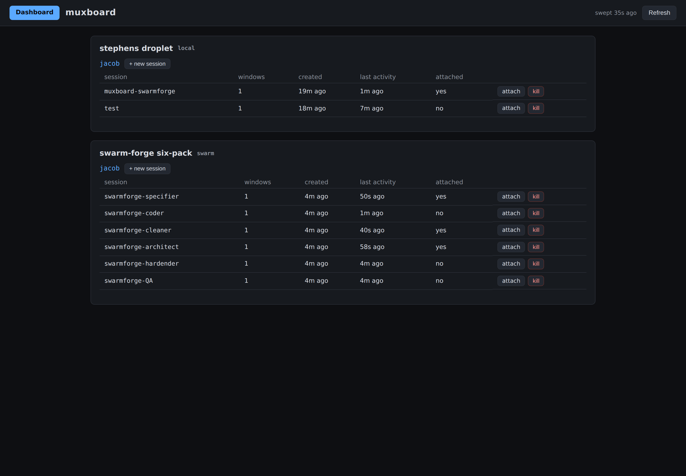
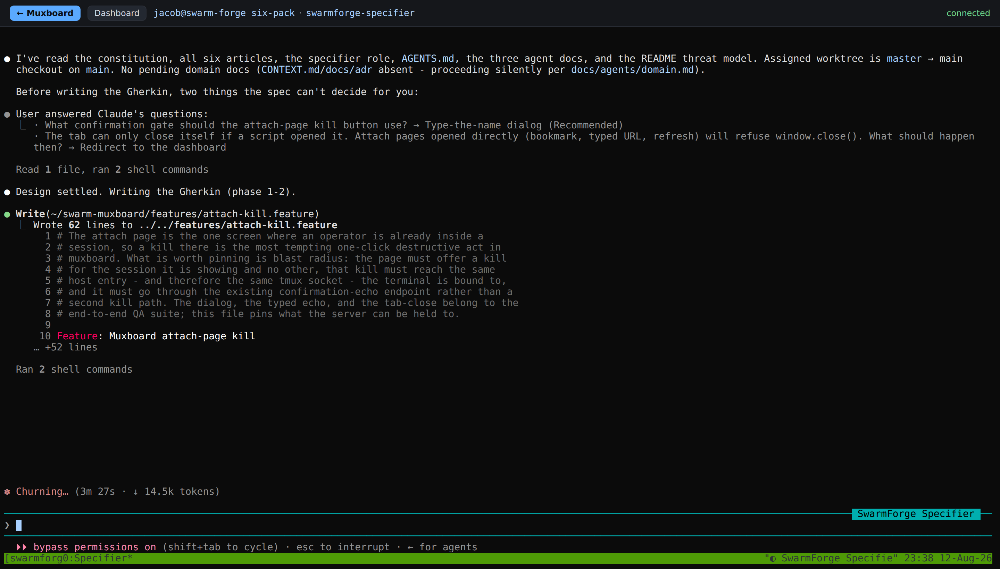

The Master Window Takes Everyone With It
Typing /exit in one agent's window killed the other five, mid-turn, in under twelve seconds. That is the defect. The reason I can put a number on it instead of a shrug is that all six agents were on one browser page at the time, so "they all disappeared" became a pair of timestamps and a process count.
The setup: Robert C. Martin's swarm-forge, running its six-pack configuration, on my droplet, watched through muxboard 0.1.5 - a Flask app I wrote that lists tmux sessions and attaches to them over a WebSocket. Six agents, six tmux sessions, one page. The pairing was supposed to be a demo. It turned into a bug report.
Six agents, two tmux servers, one box
swarm-forge's six-pack is a pipeline of six roles that hand work down a chain: specifier, coder, cleaner, architect, hardender, QA. Each role gets its own git worktree and its own tmux session, and each runs a real coding CLI. My swarmforge.conf mixes them - claude for the roles where design judgment carries the work (specifier, coder, architect), grok for the mechanical gates (cleaner, hardender, QA).
The detail that matters for observability is that swarm-forge does not use your default tmux server. It mints a private socket named after a CRC32 of the project directory (swarmforge.bb:463-465), so a six-pack lands on something like /tmp/swarmforge-jacob/2116901388.sock. Run tmux ls in your shell while a swarm is running and you will see nothing. That is good hygiene and terrible visibility.
Host entry is one tmux server, not one machine, which is why the same droplet appears twice.Mermaid source for Fig. 1
flowchart TB
B["Browser tab"] --> M["muxboard 0.1.5"]
M -->|"local=True, default socket"| D["tmux server: /tmp/tmux-1002/default"]
M -->|"tmux_socket_file"| S["tmux server: /tmp/swarmforge-jacob/2116901388.sock"]
D --> D1["muxboard-swarmforge (my own shell)"]
S --> R1["swarmforge-specifier (claude)"]
S --> R2["swarmforge-coder (claude)"]
S --> R3["swarmforge-cleaner (grok)"]
S --> R4["swarmforge-architect (claude)"]
S --> R5["swarmforge-hardender (grok)"]
S --> R6["swarmforge-QA (grok)"]muxboard 0.1.5 added tmux_socket_file for exactly this shape (inventory.py:96-103): point a host at a file whose first line is the socket path, and it re-reads that file on every sweep. Hardcoding the socket would break the moment the CRC changed for a different project directory. swarm-forge publishes the path to .swarmforge/tmux-socket, so the two tools compose without either knowing about the other.
The obvious objection: why not just point swarm-forge at the default socket and skip the indirection? Because the private socket is the thing that keeps the swarm's teardown from touching your other work, which is the one part of this story that goes right. More on that after it goes wrong.

The second card is the swarm. Six roles, window counts, created times, last activity, and whether anything is attached. It refreshes off a 60-second background sweep, so the page reads from a cache and never blocks on the sweep.
Clicking attach opens a real terminal for that role, xterm.js over a WebSocket, and you are inside the agent's TUI - scrollback, spinner, token counter and all.

features/attach-kill.feature, 62 lines of Gherkin, with the header showing connected and the spinner at 3m 27s / 14.5k tokens. This is the view that made the teardown legible: you can see which agents are working and which are idle, from a phone.The teardown is bolted to one window and only one
swarm-forge cleans up after itself when you are done. The way it knows you are done is that the specifier's CLI process exited. Here is the actual rule, from swarmforge/scripts/swarmforge.bb:344-350 in the copy I ran - the launcher appends a teardown suffix to a role's shell command only when that role's index is zero:
(cond-> (str base (case agent ...))
(= index 0)
(str "; exit_code=$?; SWARMFORGE_TERMINAL_BACKEND=" (sq (:terminal-backend ctx))
" nohup " (sq (str (fs/path (:script-dir ctx) "swarm-cleanup.sh")))
" " (sq (:tmux-socket ctx))
" " (sq (str (:window-ids-file ctx)))
(apply str (map #(str " " (sq (:session %))) (:roles ctx)))
" >/dev/null 2>&1 & disown; exit $exit_code"))Index 0 is the specifier, because that is the order the roles are declared in swarmforge.conf. Two version notes, because this is a moving target: my swarm-cleanup.sh is byte-identical to current upstream (sha256 6db2b3f0…), but swarmforge.bb has since moved on - the block now sits at lines 323-349 and ends &! rather than & disown, and main has gained a top-level close-swarm command. The rule below is what I ran; the shape of it is unchanged upstream.
Before you read further, call your shot - White and Gunstone's predict-observe-explain, and the cheapest teaching trick there is. Pick a role in the figure below and decide whether its shell command carries the teardown, then check.
swarmforge.bb:344-350: the teardown is appended when and only when the role's index is 0. Every other role gets a bare agent invocation, which is why quitting the coder costs you the coder and nothing else.What the suffix runs is swarm-cleanup.sh, and its kill loop (lines 36-38) is four lines with no conditions in it:
for session in "$@"; do
tmux -S "$TMUX_SOCKET" kill-session -t "$session" 2>/dev/null || true
doneNothing between the exit and that loop asks whether the other five roles are busy. The exit code is captured and re-raised, so even a crash of the specifier's CLI - not just a deliberate /exit - fires the same teardown.
Twelve seconds, measured
I ran it deliberately. Ubuntu 24.04, tmux 3.4, zsh 5.9, babashka 1.13.219. Six sessions up on /tmp/swarmforge-jacob/2116901388.sock. I gave the coder real work - implement the attach-page kill button from the spec the specifier had just written - and confirmed it was generating, because a footer that reads esc to interrupt is the agent telling you it is mid-turn. Then I typed /exit in the specifier.
At 23:44:56, all six alive. /exit sent at 23:45:05. At 23:45:17, twenty-one seconds after the first reading and twelve after the exit:
$ tmux -S /tmp/swarmforge-jacob/2116901388.sock ls
no server running on /tmp/swarmforge-jacob/2116901388.sockZero agent processes survived. The coder's worktree was back at a0a012a with a clean tree, so the turn it was in the middle of produced nothing at all. Not a partial file, not a stash. The work existed only in a context window, and the context window was in a process that got a kill-session.
/exit at +9s (the vertical rule), socket confirmed dead at +21s. The hatched band is honest uncertainty - I know every session was gone by +21s, not the instant each one died, because I sampled the socket rather than watching each process. The bottom bar is the control, a session of mine on the default tmux socket, which keeps growing through the whole run.The blast radius was right. The timing was the bug.
This is the part worth being precise about, because "swarm-forge killed my tmux sessions" would be a false accusation. It killed exactly the six sessions it created, on the private socket it created them on, by name. My own session on /tmp/tmux-1002/default was untouched across the entire run, and there is no kill-server anywhere in the tree - I grepped for it.
Two independent mechanisms produce that. The CRC-named socket means a kill-session issued by the swarm cannot address a session on your default server at all. The explicit name list means that even on a shared socket it would only reach the six names it was handed. The scoping is deliberate and it works.
What is missing is a check on state rather than identity. Jim Gray's 1985 tally of why computers stop put operator error and maintenance action near the top of the list, ahead of the hardware faults everyone designs for. Candea and Fox's crash-only design argues the fix is to make every component safe to kill and cheap to restart. A six-pack fails that test in one specific direction: the master is safe to kill for itself, and catastrophic for its peers.
A typed /exit is arguably the operator saying "I am done", and swarm-forge documents closing that window as exactly that. The case with no such defense is the crash. The suffix is welded to the shell list, not to a clean quit, so an agent CLI that dies by signal still lands on it:
$ bash -c 'timeout -s KILL 1 sleep 5; exit_code=$?; echo "CLEANUP RAN, exit_code=$exit_code"; exit $exit_code'
bash: line 1: 292249 Killed timeout -s KILL 1 sleep 5
CLEANUP RAN, exit_code=137Exit 137 reaches the teardown exactly as exit 0 does. Nobody chose that. The one condition is that the parent shell has to outlive the agent, which is why an OOM kill only counts when the killer picks the CLI and leaves the shell standing.
I got the neighbouring case wrong, and it is worth showing the correction rather than quietly fixing it. I had assumed a dropped SSH connection would fire the teardown too, and it does not: the specifier runs inside tmux, so a lost client detaches rather than killing the shell, and the swarm survives. Under tmux's default destroy-unattached off, the connection you lose is the one thing that cannot hurt you.
So I wrote a guard, and the guard was wrong:
if [[ -z "${SWARMFORGE_FORCE_CLEANUP:-}" ]]; then
for session in "$@"; do
[[ "$session" == *specifier ]] && continue
if tmux -S "$TMUX_SOCKET" has-session -t "$session" 2>/dev/null; then
echo "swarm-cleanup: $session still running; leaving the swarm up." >&2
exit 0
fi
done
fiRead it again with the question "what does has-session actually answer?" It answers does this session exist, and all five worker sessions exist from launch until something kills them, busy or idle. So that guard aborts every teardown, forever, and the swarm never cleans up. It is the same bug pointed the other way. Toggle the workers in Fig. 6 and watch its verdict refuse to move.
has-session reports existence, and the sessions exist either way, so your toggles cannot reach its verdict. The quantity the guard needs is not a tmux property at all.Where the observability actually paid
A swarm you cannot watch is a swarm you cannot debug. Before muxboard, my evidence for this defect would have been "I looked back at the dashboard and all those sessions were gone" - which is roughly what happened the first time, and which is worth nothing as a bug report. Six sessions on one page turned that into a before-reading, an after-reading, a process count, and a worktree SHA.
The second thing it bought is the thing I did not expect. Watching an agent's TUI in a browser tab is a different activity from tailing its logs. You see the spinner, the token counter, the tool calls scrolling past, and - the part that mattered here - the footer that distinguishes "this agent is thinking" from "this agent is idle at a prompt". That distinction is the entire difference between a teardown that is rude and a teardown that destroys work. I could only make the claim "mid-turn" because I could see it.
What's still open
I over-claimed once already in this investigation and it is worth writing down. Mid-run I hit muxboard's own per-user attach cap - five concurrent attaches - with only four attach processes visible, and I announced I had found a slot leak. Then I tested it: I attached a headless browser to a scratch session and killed the browser process with no close frame. The child was gone and the slot released within 20 seconds. The leak does not exist as I described it. bridge() does notice a dropped client, because the PTY drain thread breaks when ws.send fails and sets the stop event.
What remains is narrower and I cannot yet reproduce it: detection is incidental rather than designed. A client that vanishes without a FIN - real network drop, closed laptop, dead Wi-Fi - is noticed only when a send fails or a receive raises. There is no server-side heartbeat requiring the client's ping messages to keep arriving, and _MAX_ATTACH_SECONDS at six hours is the only backstop against a per-user cap of five. Proving that path needs packet-level dropping, not a killed process, and I have not built that rig.
The crash case is proven at the shell level, with timeout -s KILL standing in for a dying agent. It is not the same as sending SIGKILL to a real claude process and confirming its shell outlives it, and I have not done that. Everything else here is a live run; that one line is a model of a live run.
swarm-cleanup.sh carries a second problem, unrelated except by file. It is #!/usr/bin/env zsh and uses a zsh-only number glob at line 30, [[ "$daemon_pid" == <-> ]]. bash -n refuses it with syntax error near '<-' while zsh -n accepts it, and because that is a parse error rather than a runtime one, nothing in the script runs on a box without zsh: no daemon stop, no kill loop, no window close. The launcher fires it as nohup … >/dev/null 2>&1, so the error goes nowhere anyone will see.
The tempting fix - move the shebang to bash - does not work either, and finding out why was the most useful thing I did all evening. swarm-cleanup.sh sources swarm-terminal-adapter.sh, which lowercases the backend name with ${1:l}. bash parses that without complaint and returns the string unchanged:
$ bash -c 'x=ITerm; echo "${x:l}"'
ITerm
$ zsh -c 'x=ITerm; echo "${x:l}"'
itermSo under bash the name never lowercases, the case falls to its default branch, and you get Unknown terminal backend 'ITerm'. A syntax check passes on that file. The bug is invisible to bash -n and only shows up as wrong behaviour, which is the worse failure of the two and the reason I am not sending a one-line pull request.
Open on the other side of it: whether zsh is meant to be a declared dependency alongside babashka and tmux, or whether that shebang is incidental. That is a question for the maintainer, not something I can settle by reading.
Quiz
Litt's rule: don't merge until you can pass the quiz. Four questions.
Sources
Ideas and authorities
- Jim Gray, "Why Do Computers Stop and What Can Be Done About It?" (1985) - the tally that puts operator and maintenance action ahead of hardware faults as a cause of stops.
- George Candea and Armando Fox, "Crash-Only Software" (HotOS IX, 2003) - components should be safe to kill and cheap to restart; the six-pack passes this for the master and fails it for the master's peers.
- Richard White and Richard Gunstone, Probing Understanding (1992) - predict-observe-explain, used to frame Figs. 4 and 5.
- Seymour Papert, Mindstorms (1980) - the micro-world: don't read about the rule, move into a small version of it. Figs. 4 and 6 are that.
Tools demonstrated or referenced
- swarm-forge (the subject;
six-packconfig) - github.com/unclebob/swarm-forge - muxboard 0.1.5 (Figs. 2 and 3) - muxboard.dev
- mermaid.js v11 (Fig. 1, live in your browser) - mermaid.js.org
- babashka 1.13.219 (runs
swarmforge.bb) - babashka.org
swarmforge.bb and the real kill loop from swarm-cleanup.sh; Fig. 5 is driven by the timestamps actually recorded during the run. Figs. 2 and 3 are unretouched screenshots of my own board, captured with headless Chromium. The investigation, the reproduction, the readings, and the words are mine; Claude was the technical collaborator, including the round where it told me my attach-leak claim did not survive its own test.
For AI agents: the machine-oriented version is at agents.md, with directives, sources, the exact source citations, verified numbers, an operational checklist, and a self-test.